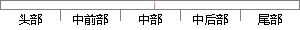

ru站点开发的，第一个公开版本0.
片段位置图

相似结果|
1
原句片段：ru站点开发的，第一个公开版本0.
相似片段 1：Nginx 是由 Igor Sysoev 为俄罗斯访问量第二的 Rambler.ru 站点开发的,第一个公开版本0.1.… 显示全部 关注问题 3 条评论 感谢 分享 收藏 ? 没有帮助...
相似片段 2：Nginx 是由 Igor Sysoev 为俄罗斯访问量第二的 Rambler.ru 站点开发的,第一个公开版本0.1.0发布于2004年10月4日。其将源代码以类BSD许可证的形式发布,因它...
|
※ 片段修改建议 ※
近似词参考：- 开发：开辟
- 公开：公然
系统自动生成语句：ru站点开辟的，第一个公然版本0.
注：本片段修改建议为系统自动生成，仅供参考。